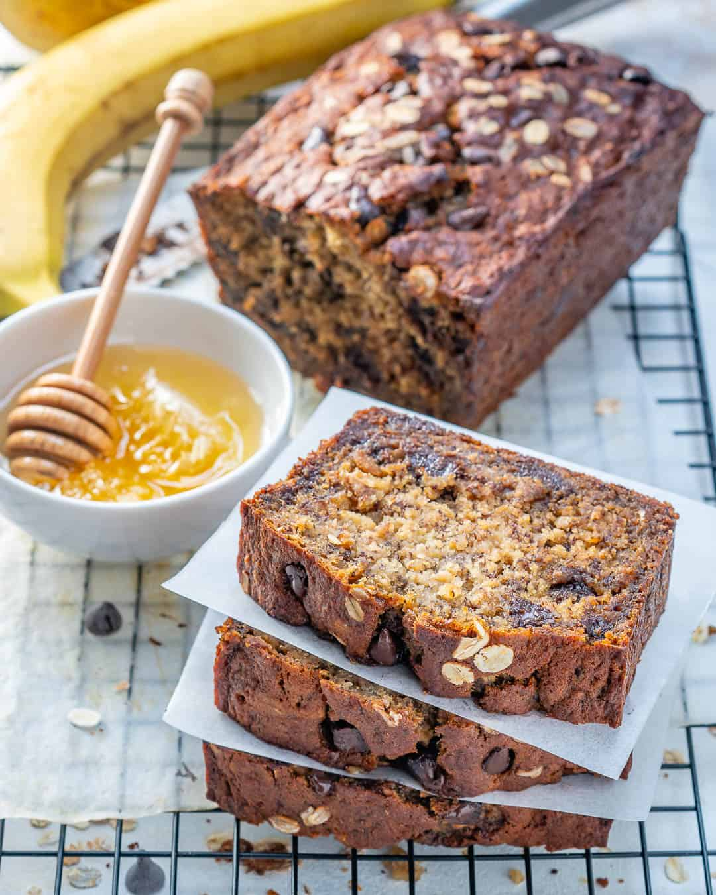

Chocolate Chip Oatmeal Banana Bread

Description
This Healthy chocolate chip banana bread recipe makes about
12-14 slices depending on how big of a slice you cut.
They are super moist, fluffy, so tasty and so easy to make.
They make an excellent snack and meal prep for breakfast in the morning.
Ingredients
- 4 ripe bananas(The riper the better)
- 3 cups of rolled oats
- 1 Tsp of baking powder
- 1 table spoon of butter
- 1/2 a cup of honey
- 2 medium eggs(Room temperature preferred).
- 1 cup of dark chocolate chips
- pinch of sea salt
- 2 Tsp vanilla extract
- 2 scoops of Vanilla Whey Protein Powder
Steps
- Preheat the oven to 375°F and grease a a wide baking pan with coconut oil.
- In a large bowl, whisk together the dry ingredients: oats, baking powder, Whey powder and salt. Set aside.
- In another bowl add the bananas and 1 Table spoon of butter. Put them in a microwave for 45 seconds and roughly mash with a fork afterwards. Whisk in the coconut oil, honey, vanilla extract, and eggs.
- Slowly add to the dry ingredients,whisk until combined and add dark chocolate chips
- Pour the batter into the prepared pan and bake for 40 to 45 minutes until a toothpick inserted into the center comes out mostly clean. A few crumbs are fine, you do not want to see wet batter on the toothpick.
- Cool bread completely on a wire cooling rack. Once cooled, remove from pan and enjoy!